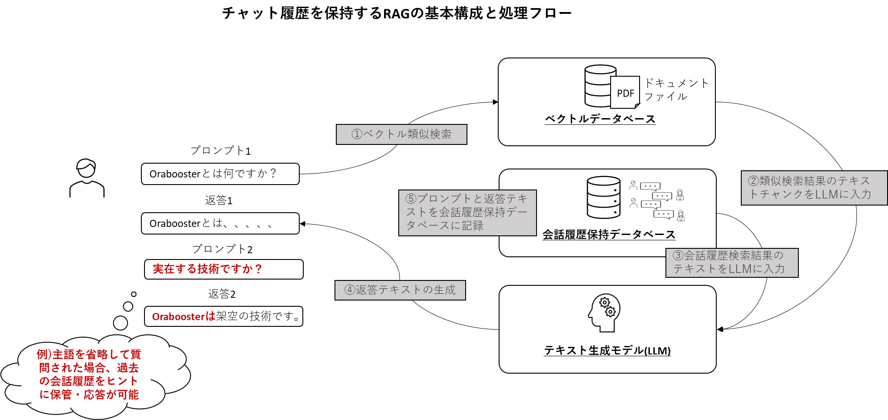
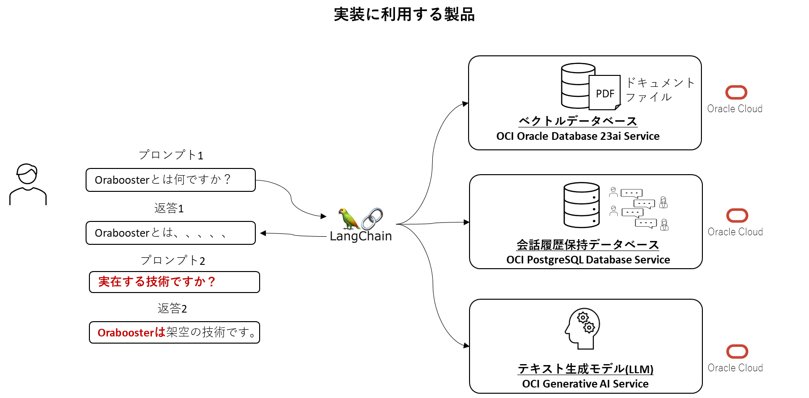
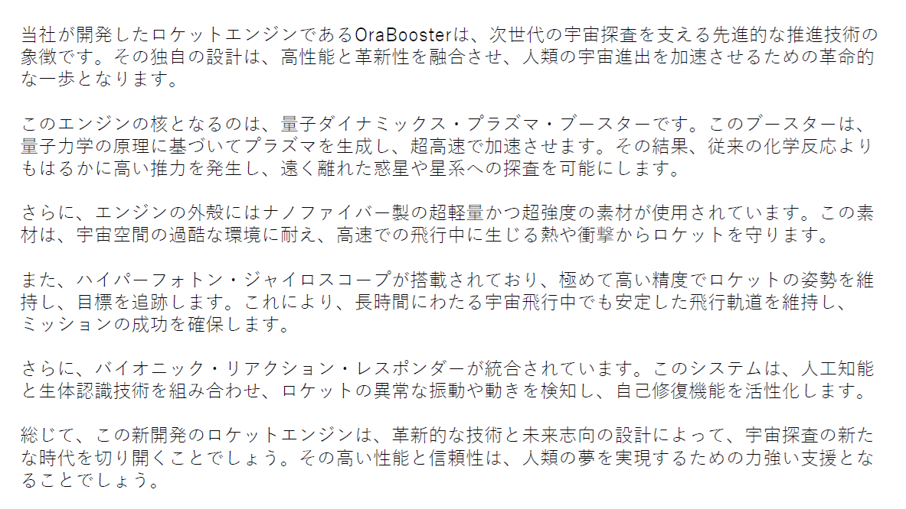

はじめに
106 : Oracle Database 23aiとLangChainでRAGを構成してみようではLangChainを利用したシンプルな検索拡張生成(RAG)の実装をご紹介しました。
今回は、その基本実装にチャット会話履歴を保持する仕組みを取り入れた構成をご紹介します。(※RAGって何ですか？という方はこちらの記事を事前にご参照ください。)
ChatGPTを使って沢山の質問を投げていると、無意識に主語を省略したり、「それ」、「あれ」、「彼」、「彼女」など代名詞などを使って以前の質問を指し示すような質問をする場合が多々あります。そんな適当に入力した質問でもLLMがちゃんと応答してくれるのは、そのセッションで入力されたプロンプトと出力された応答テキストをデータベースに保存し、新しい質問が入力されると、その前までの会話と関連性がある質問なのかどうかを判断し、必要に応じて過去の会話から必要なテキストを参照する仕組みがあるからです。

構成としては、RAGの基本コンポーネント(LLMとベクトルデータベース)に加えて、チャット履歴を保持するデータベースを追加するだけです。上図の例は、プロンプト2で主語を省略した形で質問をしていますが、プロンプト1の質問とその応答テキストがチャット履歴としてデータベースに保存されており、その内容からプロンプト2の主語が何になるかを補完して返答2として正確な応答をしているという例です。
仮に会話履歴が保持されていないと、プロンプト2の主語が何になるのかがわからず、誤った応答をしてしまう可能性が高くなるため、それを回避するためチャットボット系のアプリでは必ずこの仕組みを実装することになります。本チュートリアルではそのサンプル実装をご紹介します。
構成
今回の実装で利用する構成図が下記になります。

- オーケストレーションツール：LangChain
- ベクトルデータベース：Oracle Database 23ai(AI Vector Search)
- Autonomous Database
- Base Database Service
- Oracle Database 23ai Free(Computeインスタンスへインストール)
- 大規模言語モデル：OCI Generative AI Service
- 会話履歴保持用データベース：OCI PostgreSQL Database Service
RAGのフローや上述した会話履歴データベースの参照処理などは全てLangChainにお任せ状態になるためこちらの実装もいたってシンプルです。この構成では、会話履歴保持用データベースにPostgreSQLを使っていますが、データベースを使わずメモリに保持することもできます。その場合、多数のユーザーがたくさん質問するような環境ではメモリを圧迫しますし、システムが落ちてしまうと会話履歴が保持されませんのでやはりデータベースを使うのがよいと思います。
ドキュメントデータ
ベクトルデータベースにロードするドキュメントデータは下図のような内容のPDFファイルです。テキストの内容としては架空の製品であるロケットエンジンOraBoosterの説明文章です。企業内のデータを想定し、テキストの内容としては、存在しない製品かつ完全な創作文章、ということでLLMが学習しているはずのないデータということになります。後の手順でこちらのPDFファイルをベクトルデータベースにロードします。

106 : Oracle Database 23aiとLangChainでRAGを構成してみようで使用したPDFファイルと同じものになっているので、すでに実施済みの方はダウンロードしなくて結構です。
106を実施していない方は、以下で/tmpディレクトリにこちらのPDFをダウンロードしてください。
cd /tmp
wget https://oracle-japan.github.io/ocitutorials/ai-vector-search/ai-vector106-23ai-langchain-rag/rocket.pdf
実装
Python環境のセットアップ
まず必要なパッケージをインストールします。
pip install --upgrade pip
pip install -Uq oracledb pypdf cohere langchain langchain-community langchain-core langchain_postgres oci grandalf psycopg
Oracle Database へのデータ・ロード
次に、データベースへ接続し、pdfファイルの埋め込みとロードを行います。106 : Oracle Database 23aiとLangChainでRAGを構成してみようと同じ処理内容です。
Oracle Database へ接続します。利用するサービスによって、接続文字列が変わりますので以下のサンプルを使って接続してください。
import oracledb
# Oracle Database 23ai Free版
username = "docuser"
password = "docuser"
dsn = "localhost/freepdb1"
# BaseDB版では以下をコメントアウトして実行します
# oracledb.init_oracle_client()
# username = "docuser"
# password = "WelCome123#123#"
#dsn = "<PDBの接続文字列>" (例) basedb23ai.xxxx.vcn1.oraclevcn.com:1521/pdb1.xxxx.vcn1.oraclevcn.com
# Autonomous Database版では以下をコメントアウトして実行します
# username = "docuser"
# password = "Welcome12345#"
# dsn = "<ADBの接続文字列>" (例) (description= (retry_count=20)(retry_delay=3)(address=(protocol=tcps)(port=1521)(host=adb.ap-tokyo-1.oraclecloud.com))(connect_data=(service_name=xxxxx_xxx_low.adb.oraclecloud.com))(security=(ssl_server_dn_match=yes)))
try:
connection = oracledb.connect(user=username, password=password, dsn=dsn)
print("Connection successful!")
except Exception as e:
print("Connection failed!")
PDFファイルをロードしテキストに変換します。
from langchain.document_loaders import PyPDFLoader
loader = PyPDFLoader("/tmp/rocket.pdf")
documents = loader.load_and_split()
print(documents)
出力:
[Document(metadata={'source': '/tmp/rocket.pdf', 'page': 0}, page_content='当社が開発したロケットエンジンである OraBooster は、次世代の宇宙探査を支える先進的な推進技術の\n象徴です。その独自の設計は、高性能と革新性を融合させ、人類の宇宙進出を加速させるための革命的\nな一歩となります。\nこのエンジンの核となるのは、量子ダイナミックス・プラズマ・ブースターです。このブースターは、\n量子力学の原理に基づいてプラズマを生成し、超高速で加速させます。その結果、従来の化学反応より\nもはるかに高い推力を発生し、遠く離れた惑星や星系への探査を可能にします。\nさらに、エンジンの外殻にはナノファイバー製の超軽量かつ超強度の素材が使用されています。この素\n材は、宇宙空間の過酷な環境に耐え、高速での飛行中に生じる熱や衝撃からロケットを守ります。\nまた、ハイパーフォトン・ジャイロスコープが搭載されており、極めて高い精度でロケットの姿勢を維\n持し、目標を追跡します。これにより、長時間にわたる宇宙飛行中でも安定した飛行軌道を維持し、\nミッションの成功を確保します。\nさらに、バイオニック・リアクション・レスポンダーが統合されています。このシステムは、人工知能\nと生体認識技術を組み合わせ、ロケットの異常な振動や動きを検知し、自己修復機能を活性化します。\n総じて、この新開発のロケットエンジンは、革新的な技術と未来志向の設計によって、宇宙探査の新た\nな時代を切り開くことでしょう。その高い性能と信頼性は、人類の夢を実現するための力強い支援とな\nることでしょう。')]
変換されたテキストをチャンクに区切ります。
from langchain.text_splitter import CharacterTextSplitter
text_splitter = CharacterTextSplitter(separator="。", chunk_size=100, chunk_overlap=10)
docs = text_splitter.split_documents(documents)
print(docs)
出力:
[Document(metadata={'source': '/tmp/rocket.pdf', 'page': 0}, page_content='当社が開発したロケットエンジンである OraBooster は、次世代の宇宙探査を支える先進的な推進技術の\n象徴です'), Document(metadata={'source': '/tmp/rocket.pdf', 'page': 0}, page_content='その独自の設計は、高性能と革新性を融合させ、人類の宇宙進出を加速させるための革命的\nな一歩となります。\nこのエンジンの核となるのは、量子ダイナミックス・プラズマ・ブースターです'), Document(metadata={'source': '/tmp/rocket.pdf', 'page': 0}, page_content='このブースターは、\n量子力学の原理に基づいてプラズマを生成し、超高速で加速させます。その結果、従来の化学反応より\nもはるかに高い推力を発生し、遠く離れた惑星や星系への探査を可能にします'), Document(metadata={'source': '/tmp/rocket.pdf', 'page': 0}, page_content='さらに、エンジンの外殻にはナノファイバー製の超軽量かつ超強度の素材が使用されています。この素\n材は、宇宙空間の過酷な環境に耐え、高速での飛行中に生じる熱や衝撃からロケットを守ります'), Document(metadata={'source': '/tmp/rocket.pdf', 'page': 0}, page_content='また、ハイパーフォトン・ジャイロスコープが搭載されており、極めて高い精度でロケットの姿勢を維\n持し、目標を追跡します'), Document(metadata={'source': '/tmp/rocket.pdf', 'page': 0}, page_content='これにより、長時間にわたる宇宙飛行中でも安定した飛行軌道を維持し、\nミッションの成功を確保します。\nさらに、バイオニック・リアクション・レスポンダーが統合されています'), Document(metadata={'source': '/tmp/rocket.pdf', 'page': 0}, page_content='このシステムは、人工知能\nと生体認識技術を組み合わせ、ロケットの異常な振動や動きを検知し、自己修復機能を活性化します'), Document(metadata={'source': '/tmp/rocket.pdf', 'page': 0}, page_content='総じて、この新開発のロケットエンジンは、革新的な技術と未来志向の設計によって、宇宙探査の新た\nな時代を切り開くことでしょう'), Document(metadata={'source': '/tmp/rocket.pdf', 'page': 0}, page_content='その高い性能と信頼性は、人類の夢を実現するための力強い支援とな\nることでしょう')]
区切ったチャンクテキストを埋め込みモデル(OCI Generative AI Serviceのembed-multilingual-v3.0)でベクトルに変換し、ベクトル・データベースにロードします。
※service_endpointには大阪リージョンのエンドポイントを指定していますが、サブスクライブしているリージョンによって適宜修正してください。最新のリージョン一覧はこちらをご参照ください。例えばロンドンの場合は、service_endpointにはhttps://inference.generativeai.uk-london-1.oci.oraclecloud.comと指定します。
from langchain_community.vectorstores.oraclevs import OracleVS
from langchain_community.vectorstores.utils import DistanceStrategy
from langchain_community.embeddings import OCIGenAIEmbeddings
embeddings = OCIGenAIEmbeddings(
model_id="cohere.embed-multilingual-v3.0",
service_endpoint="https://inference.generativeai.ap-osaka-1.oci.oraclecloud.com",
compartment_id="<compartmentのOCID>",
)
vector_store_dot = OracleVS.from_documents(
docs,
embeddings,
client=connection,
table_name="doc_table",
distance_strategy=DistanceStrategy.DOT_PRODUCT,
)
特にエラーが出なければ、ドキュメントがベクトル・データベースにロードされた状態です。
注意: 以下のエラーが出る場合は、APIキーの設定ファイル~/.oci/configが作成されていません。501: OCICLIを利用したインスタンス操作を参照して、APIキーを事前に作成してください。
OCIコンソールからAPIキーの作成を行った場合は、~/.ociディレクトリを作成し、configファイルに構成ファイルスニペットを貼り付け、秘密鍵ファイルへのパスを記述してください。
ValidationError: 1 validation error for OCIGenAIEmbeddings
__root__
Could not authenticate with OCI client. Please check if ~/.oci/config exists. If INSTANCE_PRINCIPLE or RESOURCE_PRINCIPLE is used, Please check the specified auth_profile and auth_type are valid. (type=value_error)
会話履歴保存用データベース(PostgreSQL)のセットアップ
ここから会話履歴用保存用のデータベースである PostgreSQL の処理を実装します。まずこちらを参考に、OCI PostgreSQL Serviceのインスタンスを作成します。(もちろんクラウドサービスではないローカルのPostgreSQLでも同じコードになりますのでPosgreSQLは何を使っても大丈夫です。)
以降の処理はデータベースへの接続と会話履歴をロードする表の作成の2つです。
Python用のPostgreSQL接続ドライバpsycopgを使って、PostgreSQLへ接続します。
import psycopg
conn_info = (
"postgresql://<user>:<passwd>@<id adress>/<database name>"
"?sslmode=require"
"&sslrootcert=/home/opc/postgre/CaCertificate-postgresql.pub"
)
# PostgreSQLに接続
try:
sync_connection = psycopg.connect(conn_info)
print("Connection successful!")
except Exception as e:
print(f"Connection failed!: {e}")
次に履歴を保存する表を作成します。LangChainで用意されているPostgresChatMessageHistoryクラスのcreate_tables関数で簡単に表が作成できます。今回はPostgreSQLを使いましたが、その他の様々なデータベース用にたくさんのクラスがあります。このクラスの他の関数でベクトルデータベースを更新したり検索したりすることができ、後の処理で再度利用します。
from langchain_postgres import PostgresChatMessageHistory
table_name = "message_store"
PostgresChatMessageHistory.create_tables(sync_connection, table_name)
念のためPostgreSQLに接続し、表が作成されていることの確認と、その表定義を確認してみます。
PostgreSQLクライアント(psql)で接続します。
$ psql -h <ip address> -p 5432 -U <user_name> -d <database_name>
Password for user xxxx:
psql (16.1, server 14.11)
SSL connection (protocol: TLSv1.2, cipher: ECDHE-RSA-AES256-GCM-SHA384, compression: off)
Type "help" for help.
作成した表(message_store)を確認してみます。
以下のように出力されれば、表が作成されています。
postgres=> \dt
List of relations
Schema | Name | Type | Owner
--------+---------------+-------+---------
public | message_store | table | xxxx
(1 row)
クエリを実行します。 現時点ではまだプロンプトの入力は一度も行っていないので履歴件数は当然ゼロ件です。
postgres=> select * from message_store;
id | session_id | message | created_at
----+------------+---------+------------
(0 rows)
ここまでで、ベクトル・データベース(Oracle Database)と会話履歴保持用データベース(PostgreSQL)の準備が完了しました。
RAGの実装
ここからがRAGパイプラインの実装になります。 基本的にはいつものRAGの実装とあまり変わらないのですが、会話履歴保持と参照のためいくつかのクラスや関数が追加された処理を実装します。
まずはテキスト生成モデルの定義です。
from langchain_community.chat_models.oci_generative_ai import ChatOCIGenAI
llm = ChatOCIGenAI(
#model_id="cohere.command-r-08-2024",
model_id="cohere.command-r-plus-08-2024",
service_endpoint="https://inference.generativeai.ap-osaka-1.oci.oraclecloud.com",
compartment_id="<compartmentのOCID>",
model_kwargs={"temperature": 0.7, "max_tokens": 500},
)
次に、会話コンテキストに沿って回答をするために、もとのプロンプトを変換するためのretrieverを定義します。この実装により、仮に主語が省略されたプロンプトが入力されたりしても、内部的に以前の会話のコンテキストに沿ったプロンプトに変換されます。冒頭で説明した図はかなり簡略化したもので、これ以降の処理はこちらのLangChainの処理フローと一緒に確認するとコードの理解が進みやすいです。
from langchain.prompts import ChatPromptTemplate, MessagesPlaceholder
from langchain.chains import create_history_aware_retriever
contextualize_q_system_prompt = """\
以下は、ユーザとQAアシスタントの会話です。この会話履歴を考慮して、ベクトルデータベースを検索するための自然言語クエリを生成してください。
"""
contextualize_q_prompt = ChatPromptTemplate.from_messages(
[
("system", contextualize_q_system_prompt),
MessagesPlaceholder("history"),
("human", "{input}"),
]
)
retriever = vector_store_dot.as_retriever(search_kwargs={"k": 3})
history_aware_retriever = create_history_aware_retriever(
llm, retriever, contextualize_q_prompt
)
そして次が質問応答用のプロンプトの定義で、定義したプロンプトとLLMをチェーンにしているLangChainのお決まりのコードです。
from langchain.chains.combine_documents import create_stuff_documents_chain
qa_system_prompt = """\
あなたは質問応答タスクのアシスタントです。
検索された以下のコンテキストの一部を使って質問に丁寧に答えてください。
答えがわからなければ、わからないと答えてください。
最大で3つの文章を使い、簡潔な回答を心がけてください。
コンテキスト:
====
{context}
====\
"""
qa_prompt = ChatPromptTemplate.from_messages(
[
("system", qa_system_prompt),
MessagesPlaceholder("history"),
("human", "{input}"),
]
)
question_answer_chain = create_stuff_documents_chain(llm, qa_prompt)
ここまで定義したプロンプト変換用のretrieverと質問応答チェーンを一つにまとめるチェーンを定義します。
from langchain.chains import create_retrieval_chain
rag_chain = create_retrieval_chain(history_aware_retriever, question_answer_chain)
会話セッションのIDを定義(乱数)し、チャット履歴検索を実行する関数get_session_historyを定義します。
from langchain_core.chat_history import BaseChatMessageHistory
import uuid
# 会話セッションのIDを設定
session_id = str(uuid.uuid4())
def get_session_history(session_id: str) -> BaseChatMessageHistory:
return PostgresChatMessageHistory(
table_name,
session_id,
sync_connection=sync_connection
)
ここまで定義した、チェーン(rag_chain)と上記のget_session_history関数をRunnableWithMessageHistoryでまとめて完成です。
from langchain_core.runnables.history import RunnableWithMessageHistory
conversational_rag_chain = RunnableWithMessageHistory(
rag_chain,
get_session_history,
input_messages_key="input",
history_messages_key="history",
output_messages_key="answer",
)
まずはシンプルに質問してみます。
response = conversational_rag_chain.invoke(
{"input": "OraBoosterとは何ですか？"},
config={"configurable": {"session_id": session_id}},
)
print(response)
出力はこちらの普通のRAGの応答です。まずベクトルデータベースを参照して応答するというRAGのパイプラインがちゃんと実行され返答されていることがわかります。 出力の各項目の説明が以下になります。
- history : 参照した会話履歴(空になっているのは、このプロンプトが一番最初の質問なので参照する履歴がなかったということを表しています。)
- context : ベクトルデータベースから検索してきたチャンクテキスト
- answer : 最終的な返答のテキスト
{'input': 'OraBoosterとは何ですか？',
'history': [],
'context': [Document(metadata={'source': '/tmp/rocket.pdf', 'page': 0}, page_content='当社が開発したロケットエンジンである OraBooster は、次世代の宇宙探査を支える先進的な推進技術の\n象徴です'),
Document(metadata={'source': '/tmp/rocket.pdf', 'page': 0}, page_content='その高い性能と信頼性は、人類の夢を実現するための力強い支援とな\nることでしょう'),
Document(metadata={'source': '/tmp/rocket.pdf', 'page': 0}, page_content='また、ハイパーフォトン・ジャイロスコープが搭載されており、極めて高い精度でロケットの姿勢を維\n持し、目標を追跡します')],
'answer': 'OraBooster は、次世代の宇宙探査を支えるために開発された先進的なロケットエンジンです。高い性能と信頼性、そしてハイパーフォトン・ジャイロスコープによる高精度の姿勢制御を特長とします。'}
ここでPostgreSQLにクエリを実行して会話履歴を確認してみます。 以下のように、inputとanswerの2件が履歴として追加されていることがわかります。
postgres=> select * from message_store;
id | session_id | message | created_at
----+--------------------------------------+------------------------------------------------------------------------------------+----------------------------
1 | 5e2a952c-59a4-40e1-9355-f688a3dbf27e | {"data": {"id": null, "name": null, "type": "human", "content": "OraBoosterとは何ですか？", "example": false, "additional_kw
args": {}, "response_metadata": {}}, "type": "human"} | 2024-07-24 07:01:39.320933+00
2 | 5e2a952c-59a4-40e1-9355-f688a3dbf27e | {"data": {"id": null, "name": null, "type": "ai", "content": "OraBooster は、次世代の宇宙探査を支える先進的な推進技術を備え
ロケットエンジンです。高い性能と信頼性、そしてハイパーフォトン・ジャイロスコープによる極めて高い姿勢制御精度を特長とします。", "example": false, "tool_calls": [], "usage
_metadata": null, "additional_kwargs": {}, "response_metadata": {}, "invalid_tool_calls": []}, "type": "ai"} | 2024-07-24 07:01:39.320933+00
(2 rows)
次に、oraboosterという主語を省略して質問してみます。(主語を「それ」という指示代名詞に変換した質問でもいいと思います。)
response = conversational_rag_chain.invoke(
{"input": "実在するものですか？"},
config={"configurable": {"session_id": session_id}},
)
print(response)
historyでこの一つ前のプロンプトと応答が履歴として参照されていることがわかります。これにより、プロンプトで省略されている主語が「Orabooster」であること判断され、正しい応答がされていることがわかります。
{'input': '実在するものですか？',
'history': [HumanMessage(content='OraBoosterとは何ですか？'),
AIMessage(content='OraBoosterは、次世代の宇宙探査を支えるために開発された先進的なロケットエンジンです。高い性能と信頼性、ハイパーフォトン・ジャイロスコープによる姿勢制御が特徴です。')],
'context': [Document(metadata={'source': '/tmp/rocket.pdf', 'page': 0}, page_content='その高い性能と信頼性は、人類の夢を実現するための力強い支援とな\nることでしょう'),
Document(metadata={'source': '/tmp/rocket.pdf', 'page': 0}, page_content='また、ハイパーフォトン・ジャイロスコープが搭載されており、極めて高い精度でロケットの姿勢を維\n持し、目標を追跡します'),
Document(metadata={'source': '/tmp/rocket.pdf', 'page': 0}, page_content='これにより、長時間にわたる宇宙飛行中でも安定した飛行軌道を維持し、\nミッションの成功を確保します。\nさらに、バイオニック・リアクション・レスポンダーが統合されています')],
'answer': 'いいえ、OraBooster は架空のテクノロジーです。架空の設定に基づいた説明文です。'}
再度PostgreSQLでクエリ実行すると2回目のinputとanswerが追加されていることがわかります。
postgres=> select * from message_store;
id | session_id | message | created_at
----+----------------------------+-------------------------------------------------------------------------+-------------------------------------
1 | e8b3a9c2-28de-4f18-947a-2e0d7057cf2e | {"data": {"id": null, "name": null, "type": "human", "content": "OraBoosterとは何ですか？", "example": false, "additional_kwargs": {},"response_metadata":{}}, "type":"human"} | 2024-07-28 22:54:45.934184+00
2 | e8b3a9c2-28de-4f18-947a-2e0d7057cf2e | {"data": {"id": null, "name": null, "type": "ai", "content": "OraBoosterは、次世代の宇宙探査を支える先進的な推進技術を誇るロケットエンジンです。高い性能と
頼性、ハイパーフォトン・ジャイロスコープによる姿勢制御が特徴です。", "example": false, "tool_calls": [], "usage_metadata": null, "additional_kwargs": {}, "response_metadata": {}, "invalid_tool_calls":[]}, "type": "ai"} | 2024-07-28 22:54:45.934184+00
3 | e8b3a9c2-28de-4f18-947a-2e0d7057cf2e | {"data": {"id": null, "name": null, "type": "human", "content": "実在するものですか？", "example": false, "additional_kwargs": {}, "response_metadata": {}},"type":"human"} | 2024-07-28 22:55:59.114845+00
4 | e8b3a9c2-28de-4f18-947a-2e0d7057cf2e | {"data": {"id": null, "name": null, "type": "ai", "content": "いいえ、OraBooster は架空のロケットエンジンです。", "example": false, "tool_calls": [], "usage_metadata": null, "additional_kwargs": {}, "response_metadata": {}, "invalid_tool_calls": []},"type":"ai"} | 2024-07-28 22:55:59.114845+00
(4 rows)
次は主語を「それ」(指示代名詞)に変更してみます。
response = conversational_rag_chain.invoke(
{"input": "それはいつ開発されましたか"},
config={"configurable": {"session_id": session_id}},
)
print(response)
主語が「Orabooster」であることをチャット履歴から補完し、最終的なテキストを生成していることがわかります。
{'input': 'それはいつ開発されましたか',
'history': [HumanMessage(content='OraBoosterとは何ですか？'),
AIMessage(content='OraBoosterは、次世代の宇宙探査を支えるために開発された先進的なロケットエンジンです。高い性能と信頼性、ハイパーフォトン・ジャイロスコープによる姿勢制御が特徴です。'),
HumanMessage(content='実在するものですか？'),
AIMessage(content='いいえ、OraBooster は架空のテクノロジーです。宇宙探査の未来を想像してください。')],
'context': [Document(metadata={'source': '/tmp/rocket.pdf', 'page': 0}, page_content='その高い性能と信頼性は、人類の夢を実現するための力強い支援とな\nることでしょう'),
Document(metadata={'source': '/tmp/rocket.pdf', 'page': 0}, page_content='また、ハイパーフォトン・ジャイロスコープが搭載されており、極めて高い精度でロケットの姿勢を維\n持し、目標を追跡します'),
Document(metadata={'source': '/tmp/rocket.pdf', 'page': 0}, page_content='総じて、この新開発のロケットエンジンは、革新的な技術と未来志向の設計によって、宇宙探査の新た\nな時代を切り開くことでしょう')],
'answer': 'OraBoosterはまだ開発されていない架空のロケットエンジンなので、開発時期はありません。'}
その他、いくつかの質問をしてみます。
response = conversational_rag_chain.invoke(
{"input": "いつ使われる予定ですか？"},
config={"configurable": {"session_id": session_id}},
)
print(response)
返答
{'input': 'いつ使われる予定ですか？',
'history': [HumanMessage(content='OraBoosterとは何ですか？'),
AIMessage(content='OraBoosterは、次世代の宇宙探査を支えるために開発された先進的なロケットエンジンです。高い性能と信頼性、ハイパーフォトン・ジャイロスコープによる姿勢制御が特徴です。'),
HumanMessage(content='実在するものですか？'),
AIMessage(content='いいえ、OraBooster は架空のテクノロジーです。宇宙探査の未来を想像してください。'),
HumanMessage(content='それはいつ開発されましたか'),
AIMessage(content='OraBooster はまだ開発されていません。これから生み出される未来の技術です。')],
'context': [Document(metadata={'source': '/tmp/rocket.pdf', 'page': 0}, page_content='その高い性能と信頼性は、人類の夢を実現するための力強い支援とな\nることでしょう'),
Document(metadata={'source': '/tmp/rocket.pdf', 'page': 0}, page_content='また、ハイパーフォトン・ジャイロスコープが搭載されており、極めて高い精度でロケットの姿勢を維\n持し、目標を追跡します'),
Document(metadata={'source': '/tmp/rocket.pdf', 'page': 0}, page_content='総じて、この新開発のロケットエンジンは、革新的な技術と未来志向の設計によって、宇宙探査の新た\nな時代を切り開くことでしょう')],
'answer': 'OraBooster の使用時期は未定です。これからの開発次第で、将来の宇宙探査を支える存在となるでしょう。'}
質問
response = conversational_rag_chain.invoke(
{"input": "重量はどれくらいですか？"},
config={"configurable": {"session_id": session_id}},
)
print(response)
返答
{'input': '重量はどれくらいですか？',
'history': [HumanMessage(content='OraBoosterとは何ですか？'),
AIMessage(content='OraBoosterは、次世代の宇宙探査を支えるために開発された先進的なロケットエンジンです。高い性能と信頼性、ハイパーフォトン・ジャイロスコープによる姿勢制御が特徴です。'),
HumanMessage(content='実在するものですか？'),
AIMessage(content='いいえ、OraBooster は架空のテクノロジーです。宇宙探査の未来を想像してください。'),
HumanMessage(content='それはいつ開発されましたか'),
AIMessage(content='OraBooster はまだ開発されていません。これから生み出される未来の技術です。'),
HumanMessage(content='いつ使われる予定ですか？'),
AIMessage(content='OraBooster の使用時期は未定です。これからの開発次第で、将来の宇宙探査を支える存在となるでしょう。')],
'context': [Document(metadata={'source': '/tmp/rocket.pdf', 'page': 0}, page_content='その高い性能と信頼性は、人類の夢を実現するための力強い支援とな\nることでしょう'),
Document(metadata={'source': '/tmp/rocket.pdf', 'page': 0}, page_content='また、ハイパーフォトン・ジャイロスコープが搭載されており、極めて高い精度でロケットの姿勢を維\n持し、目標を追跡します'),
Document(metadata={'source': '/tmp/rocket.pdf', 'page': 0}, page_content='これにより、長時間にわたる宇宙飛行中でも安定した飛行軌道を維持し、\nミッションの成功を確保します。\nさらに、バイオニック・リアクション・レスポンダーが統合されています')],
'answer': 'OraBooster の重量は不明です。軽量化素材や推進システムの効率によって変動するでしょう。'}
質問
response = conversational_rag_chain.invoke(
{"input": "姿勢制御に使われている技術は何ですか？"},
config={"configurable": {"session_id": session_id}},
)
print(response)
返答
{'input': '姿勢制御に使われている技術は何ですか？',
'history': [HumanMessage(content='OraBoosterとは何ですか？'),
AIMessage(content='OraBoosterは、次世代の宇宙探査を支えるために開発された先進的なロケットエンジンです。高い性能と信頼性、ハイパーフォトン・ジャイロスコープによる姿勢制御が特徴です。'),
HumanMessage(content='実在するものですか？'),
AIMessage(content='いいえ、OraBooster は架空のテクノロジーです。宇宙探査の未来を想像してください。'),
HumanMessage(content='それはいつ開発されましたか'),
AIMessage(content='OraBooster はまだ開発されていません。これから生み出される未来の技術です。'),
HumanMessage(content='いつ使われる予定ですか？'),
AIMessage(content='OraBooster の使用時期は未定です。これからの開発次第で、将来の宇宙探査を支える存在となるでしょう。'),
HumanMessage(content='重量はどれくらいですか？'),
AIMessage(content='OraBooster の重量は不明です。軽量化素材や推進システムの効率によって変動するでしょう。')],
'context': [Document(metadata={'source': '/tmp/rocket.pdf', 'page': 0}, page_content='また、ハイパーフォトン・ジャイロスコープが搭載されており、極めて高い精度でロケットの姿勢を維\n持し、目標を追跡します'),
Document(metadata={'source': '/tmp/rocket.pdf', 'page': 0}, page_content='これにより、長時間にわたる宇宙飛行中でも安定した飛行軌道を維持し、\nミッションの成功を確保します。\nさらに、バイオニック・リアクション・レスポンダーが統合されています'),
Document(metadata={'source': '/tmp/rocket.pdf', 'page': 0}, page_content='その高い性能と信頼性は、人類の夢を実現するための力強い支援とな\nることでしょう')],
'answer': '姿勢制御にはハイパーフォトン・ジャイロスコープ技術が使用されています。'}
質問
response = conversational_rag_chain.invoke(
{"input": "重要なものですか？"},
config={"configurable": {"session_id": session_id}},
)
print(response)
返答
{'input': '重要なものですか？',
'history': [HumanMessage(content='OraBoosterとは何ですか？'),
AIMessage(content='OraBoosterは、次世代の宇宙探査を支えるために開発された先進的なロケットエンジンです。高い性能と信頼性、ハイパーフォトン・ジャイロスコープによる姿勢制御が特徴です。'),
HumanMessage(content='実在するものですか？'),
AIMessage(content='いいえ、OraBooster は架空のテクノロジーです。宇宙探査の未来を想像してください。'),
HumanMessage(content='それはいつ開発されましたか'),
AIMessage(content='OraBooster はまだ開発されていません。これから生み出される未来の技術です。'),
HumanMessage(content='いつ使われる予定ですか？'),
AIMessage(content='OraBooster の使用時期は未定です。これからの開発次第で、将来の宇宙探査を支える存在となるでしょう。'),
HumanMessage(content='重量はどれくらいですか？'),
AIMessage(content='OraBooster の重量は不明です。軽量化素材や推進システムの効率によって変動するでしょう。'),
HumanMessage(content='姿勢制御に使われている技術は何ですか？'),
AIMessage(content='姿勢制御にはハイパーフォトン・ジャイロスコープ技術が使用されています。')],
'context': [Document(metadata={'source': '/tmp/rocket.pdf', 'page': 0}, page_content='その高い性能と信頼性は、人類の夢を実現するための力強い支援とな\nることでしょう'),
Document(metadata={'source': '/tmp/rocket.pdf', 'page': 0}, page_content='また、ハイパーフォトン・ジャイロスコープが搭載されており、極めて高い精度でロケットの姿勢を維\n持し、目標を追跡します'),
Document(metadata={'source': '/tmp/rocket.pdf', 'page': 0}, page_content='これにより、長時間にわたる宇宙飛行中でも安定した飛行軌道を維持し、\nミッションの成功を確保します。\nさらに、バイオニック・リアクション・レスポンダーが統合されています')],
'answer': 'はい、重要な技術です。ロケットの正確な姿勢制御と目標追跡を可能にし、ミッションの成功に大きく貢献します。'}
質問
response = conversational_rag_chain.invoke(
{"input": "それがないと何が起こりますか？"},
config={"configurable": {"session_id": session_id}},
)
print(response)
返答
{'input': 'それがないと何が起こりますか？',
'history': [HumanMessage(content='OraBoosterとは何ですか？'),
AIMessage(content='OraBoosterは、次世代の宇宙探査を支えるために開発された先進的なロケットエンジンです。高い性能と信頼性、ハイパーフォトン・ジャイロスコープによる姿勢制御が特徴です。'),
HumanMessage(content='実在するものですか？'),
AIMessage(content='いいえ、OraBooster は架空のテクノロジーです。宇宙探査の未来を想像してください。'),
HumanMessage(content='それはいつ開発されましたか'),
AIMessage(content='OraBooster はまだ開発されていません。これから生み出される未来の技術です。'),
HumanMessage(content='いつ使われる予定ですか？'),
AIMessage(content='OraBooster の使用時期は未定です。これからの開発次第で、将来の宇宙探査を支える存在となるでしょう。'),
HumanMessage(content='重量はどれくらいですか？'),
AIMessage(content='OraBooster の重量は不明です。軽量化素材や推進システムの効率によって変動するでしょう。'),
HumanMessage(content='姿勢制御に使われている技術は何ですか？'),
AIMessage(content='姿勢制御にはハイパーフォトン・ジャイロスコープ技術が使用されています。'),
HumanMessage(content='重要なものですか？'),
AIMessage(content='はい、重要な技術です。ロケットの正確な姿勢制御と目標追跡を可能にし、ミッションの成功に大きく貢献します。')],
'context': [Document(metadata={'source': '/tmp/rocket.pdf', 'page': 0}, page_content='その高い性能と信頼性は、人類の夢を実現するための力強い支援とな\nることでしょう'),
Document(metadata={'source': '/tmp/rocket.pdf', 'page': 0}, page_content='これにより、長時間にわたる宇宙飛行中でも安定した飛行軌道を維持し、\nミッションの成功を確保します。\nさらに、バイオニック・リアクション・レスポンダーが統合されています'),
Document(metadata={'source': '/tmp/rocket.pdf', 'page': 0}, page_content='また、ハイパーフォトン・ジャイロスコープが搭載されており、極めて高い精度でロケットの姿勢を維\n持し、目標を追跡します')],
'answer': 'ロケットは宇宙空間で正確な姿勢制御ができなくなり、軌道が不安定になる可能性があります。その結果、ミッションの失敗や宇宙飛行士の生命の危険につながる恐れがあります。'}
主語を省略したり、代名詞に置き換えても、過去の会話履歴からそのコンテキストを理解し、返答できることが確認できました。